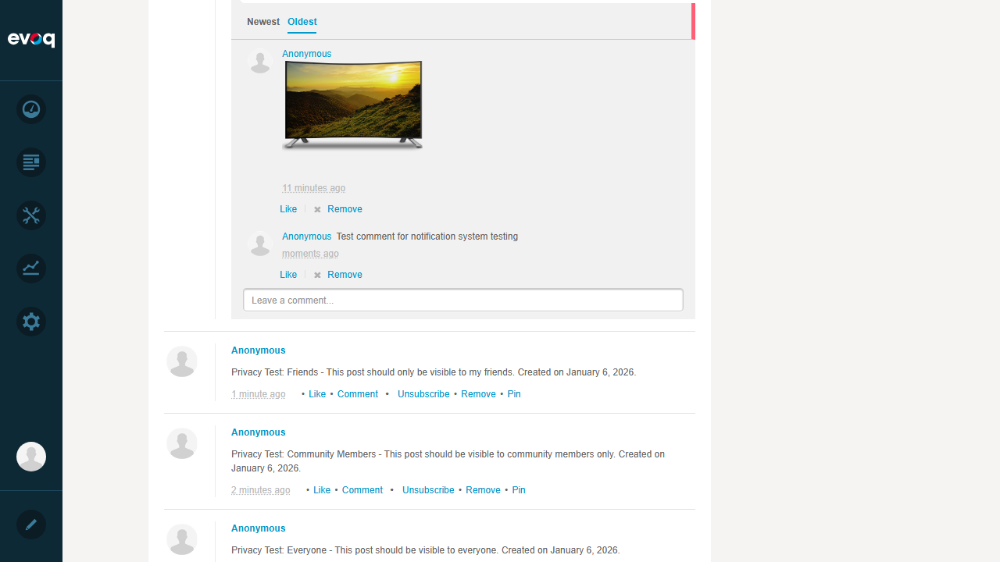
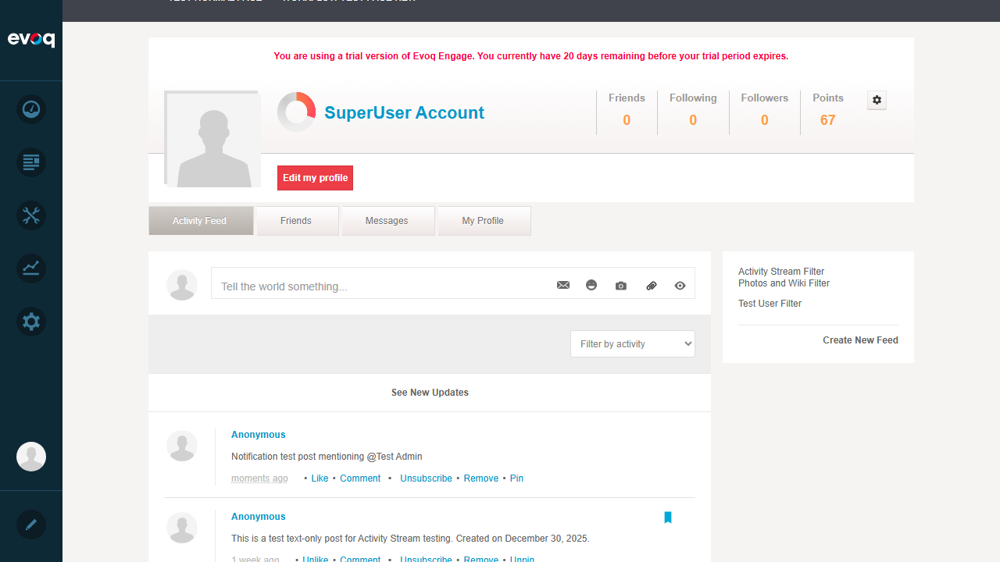
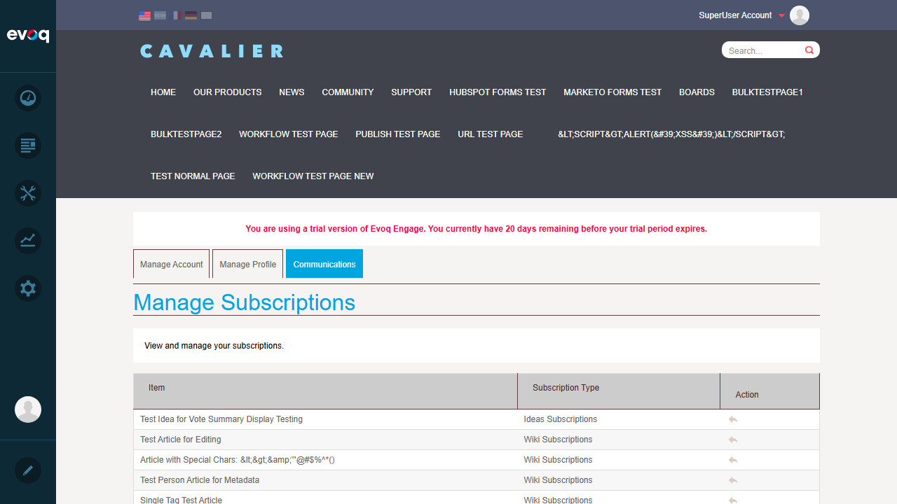
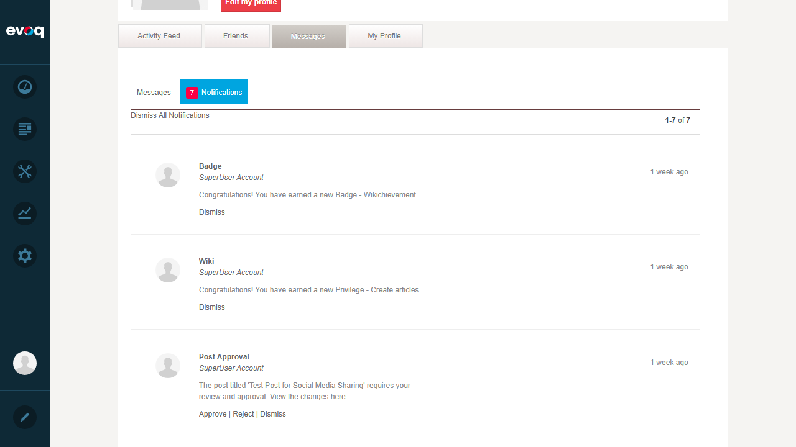
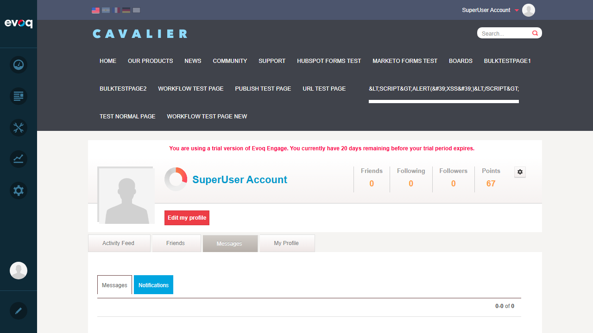
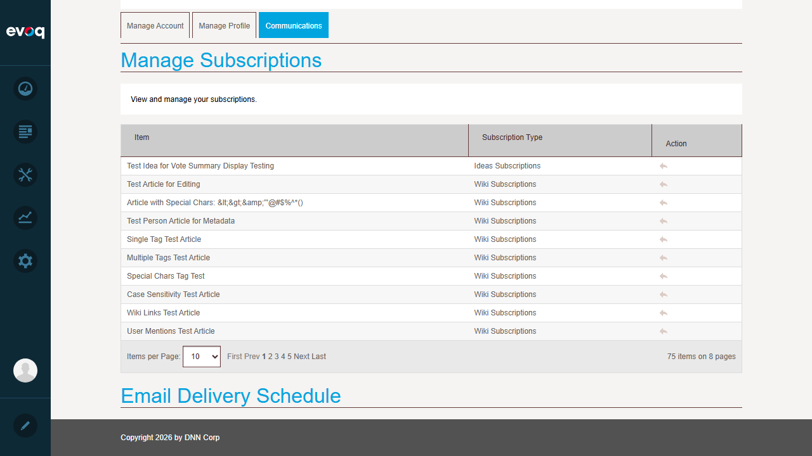

Notification System - Test Report
Feature Information
Extension: Evoq.Social.ActivityStream (Module)
Feature Name: Notification System
Description: Receive notifications for various activity stream events
Feature Priority: High
UI Location: User Profile > Notifications
Test Date: January 6, 2026
Test Results
Scenario: Receive notification for post comment
Steps Taken:
- Navigated to Activity Feed
- Clicked Comment on an existing post
- Typed test comment: "Test comment for notification system testing"
- Clicked Reply button to submit
Result: Comment was successfully posted. The comment appears in the activity feed with Like and Remove options. Users subscribed to the post would receive notifications.

Scenario: Receive notification for post like
Steps Taken:
- Located a post ("Privacy Test: Friends")
- Clicked the Like button
- Verified button changed to "Unlike" and "You like this" appeared
Result: Like functionality works. Button changed to "Unlike" and shows "You like this" indicator. The post owner would receive a notification.
Scenario: Receive notification for user mention
Steps Taken:
- Clicked on "Tell the world something..." post input
- Typed: "Notification test post mentioning @Test Admin"
- Clicked Share button to post
Result: Post with @mention was successfully created. The mention appears in the post content. Code review confirms UserMentionNotificationsController.Instance.SendUserMentionedNotification() is called when mentions are detected.

Scenario: Receive notification for subscribed post activity
Steps Taken:
- Verified Subscribe/Unsubscribe options visible on posts
- Verified user is automatically subscribed when commenting (from code review)
- Verified Communications tab shows "Manage Subscriptions" for managing subscriptions
Result: Posts show Subscribe/Unsubscribe toggle. Code confirms users are automatically subscribed when they comment: _subscriptionController.SubscribeToPost(). Subscriptions appear in Communications > Manage Subscriptions (75 items shown).

Scenario: Mark notification as read
Steps Taken:
- Navigated to Notifications page (User menu > 8 Notifications)
- Located a Wiki privilege notification
- Clicked "Dismiss" link on the notification
- Verified notification count changed from 8 to 7
Result: Single notification was successfully dismissed. Tab updated from "8 Notifications" to "7 Notifications". Success message "The action has been performed successfully" displayed.

Scenario: Clear all notifications
Steps Taken:
- On Notifications page, clicked "Dismiss All Notifications" link
- Confirmation dialog appeared: "Are you sure you want to dismiss all 7 notification(s)?"
- Clicked "Yes" to confirm
- Verified all notifications were cleared
Result: All notifications were successfully cleared. Tab changed to show "Notifications" (no count badge) and displays "0-0 of 0".

Scenario: Configure notification preferences
Steps Taken:
- Navigated to My Profile > Edit my profile
- Clicked on "Communications" tab
- Found "Manage Subscriptions" section
- Found "Email Delivery Schedule" section
Result: Notification preferences are accessible via Edit Profile > Communications tab. Users can manage their subscriptions (75 items paginated) and configure email delivery schedule.

Scenario: Test notification delivery methods
Steps Taken:
- Verified notifications appear in user's notification panel (Messages tab)
- Found "Email Delivery Schedule" section for email notification configuration
- Code review confirmed: SendToast = false in notification creation (toasts disabled)
Result: Notifications are delivered via the web notification panel (Messages > Notifications tab). Email delivery can be configured in Communications > Email Delivery Schedule. Code confirms notification setup with IncludeDismissAction = true.

Observations
- @Mention Autocomplete: When typing @mentions in posts, the autocomplete dropdown may not always trigger. Manual typing of @username still creates a mention, but without the automatic link formatting. The notification is still sent per code implementation.
- Single User Testing Limitation: Since testing was done with a single SuperUser account, notifications for own actions (like liking own posts) may not appear to the same user. Multi-user testing would be needed to verify notification delivery to other users.
- Toast Notifications: Code review shows SendToast = false for all notification types, meaning browser toast notifications are disabled by default.
- Subscription Auto-Creation: Code confirms users are automatically subscribed to posts when they comment (SubscribeToPost is called in NewCommentNotifications).
- Notification Types Found: Post notifications, Comment notifications, User mentions, Wiki privileges, Badge earned, Post approvals, User reports.